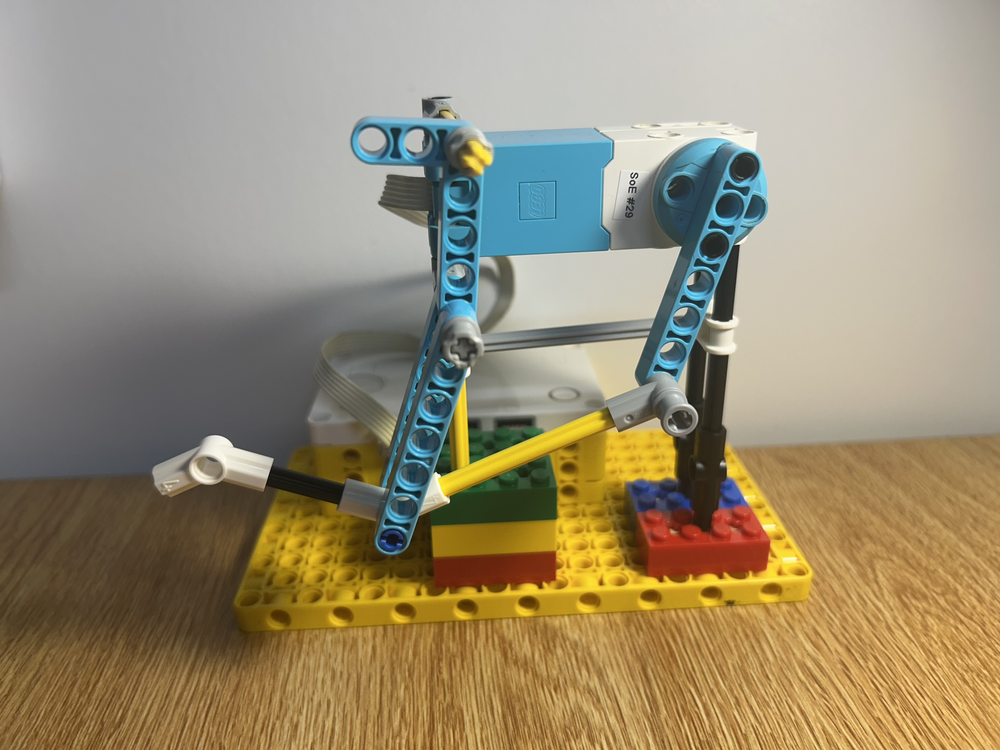

Project Portfolio

Project 3: Biomimicry
.png)
.png)

At a glance
Goal: Use LEGO to mimic the strength and motion of a frog's leg, focusing on the snap of the legs.
Result: I achieved a good snap motion, and the kick got some power, but the motion resembled the legs of a horse.
Key takeaway: The motors, cogs, and rack were too big for my first two designs, which pushed me toward a different use of linear motion.
The Challenge
For this project, I wanted to explore how LEGO can be used to mimic the strength and motion of a frog's leg.
.
Inspiration
Following slow-motion video footage of a frog jumping, I noted how the frog's kick is similar to a snapping motion. The legs fully extend and kick forward, and only the arms of the frog are used to absorb the impact of the landing. (see Animal Sketches)
Design Process
For my design, I only wanted to focus on the snap of the legs.
Attempt 1: Gear ratios and epicycles
I thought of using gear ratios to create that snapping motion. My thought process was to use the concept of epicycles, but I couldn't make individual gears rotate on their own. The motors are simply too big.
Attempt 2: Linear motion between joints (1) and (3)
Next, I thought about creating some sort of linear motion. In my sketches I labeled the joints with numbers, so I thought about creating some linear force that separates joints (1) and (3). Again, the motor, cogs, and rack were too big. It was hard to create a working prototype. (see Robot Design)
Final design: Linear motion pushing joint (2) backward
My final design also used linear motion, but instead of separating joints (1) and (3), I used linear motion to push joint (2) backward. Once I got the motion down, I still needed to figure out which parts to anchor, at what y-level, and whether the motor should spin CW or CCW. In the end, I had to anchor joint (1) fully, and I achieved a good snap motion.
Results
While I was able to achieve a good kick, I realized that this motion resembled the legs of a horse more if the motor was continuously spun CCW, but the kick got some power! (see Demo Video)